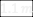
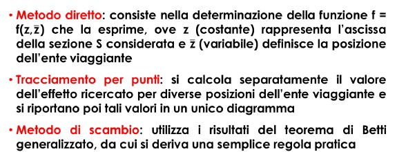
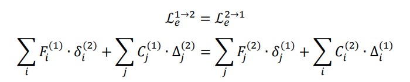

1.
Quale è stata l’evoluzione dei carichi da traffico sui ponti
nell’arco dell’ultimo secolo?
Sino all’anno 1980 i
ponti stradali venivano classificati in due categorie a seconda della loro
ubicazione e del loro utilizzo, laddove fossero ricaduti in categoria 1 allora
i carichi da traffico erano tarati sui mezzi militari dell’epoca altrimenti sui
carichi degli autocarri di trasporto dell’epoca, rispettivamente i valori erano
di circa 60 t per categoria 1 e 10 t per categoria 2.
A partire dagli anni
80 con l’introduzione di un nuovo decreto ministeriale i carichi diventano non
più reali ma rappresentativi ed ideali con definizione dei carichi a partire
dalla lunghezza dell’impalcato e definizione di coefficienti dinamici.
Nel ’08 con le nuove
norme tecniche si introducono gli attuali carichi da traffico, nuovamente non
reali ma rappresentativi ed ideali di una situazione di traffico.
Le differenze tra i
diversi approcci è stata valutata su un set di ponti a campate appoggiate
semplicemente e si è visto come in termini di momento ultimo l’azione di
progetto dell’epoca risulti mediamente inferiore del 35% per la sollecitazione
flessionale e del 10% per la sollecitazione tagliante.
2.
Carichi da traffico NTC18
Attualmente la
normativa prevede la suddivisione della piattaforma stradale carrabile in
corsie convenzionali, ciascuna da 3 m, su cui si vanno a definire i carichi da
traffico, il tempo di ritorno è pari a 1000 anni.
La corsia 1 presenta
un carico tandem di 600 KN suddiviso su due assi da 300 KN con impronte da 150
KN di dimensione 40x40 cm, corsia 2 400 KN suddiviso su due assi da 200 KN,
corsia 3 200 KN suddiviso su due assi da 100 KN.
Le stese di carico
sono invece rispettivamente 9 KN/m^2 per corsia 1 e 2.5 KN/m^2 per le rimanenti
corsie e l’area rimanente.
In riferimento al
capitolo II e V della normativa i carichi andranno opportunamente disposti e
combinati, ad esempio, laddove si voglia massimizzare il taglio in appoggio per
la verifica di ponti a travata il carico tandem andrà posizionato in appoggio mentre
laddove si voglia massimizzare momento verrà disposto nella mezzeria
dell’impalcato, entrambe le operazioni andranno fatte per tutte le possibili
corsie disponibili sull’impalcato, ad esempio, su di un impalcato di 8 m vi
saranno due corsie convenzionali, la 1 con 600 KN + 9 KN/m^2 e la 2 con 400 KN
+ 2.5 KN/m^2, i 2 m rimanenti sono considerati area rimanente la quale è
caricata con 2.5 KN/m^2.
Particolare
attenzione va fatta alla disposizione trasversale del carico, non è detto che
caricando tutte le corsie simultaneamente si stia massimizzando la
sollecitazione cercata, questo effetto può essere approfondito e spiegato con
l’effetto “Courbon”
3.
Quali sono i principali carichi da considerare su un impalcato da
ponte?
Le principali azioni
da considerare su un impalcato da ponte sono sicuramente:
·
Carichi permanenti
strutturali: peso impalcato
·
Carichi permanenti
non strutturali: pavimentazione, barriere, impianti
·
Carichi da traffico
·
Vento (Orizzontale e
verticale con eccentricità B/4, EC2)
·
Termica (se
iperstatico)
·
Neve
Ulteriori carichi
devono essere considerati in altre verifiche locali inerenti l’impalcato:
·
Svio per cordoli
·
Frenatura e
Centrifuga per dimensionamento e verifica appoggi
1)
Azioni sui ponti
NTC2018
Ai sensi delle NTC2018, sono definiti, oltre ai carichi permanenti
strutturali e non strutturali, i seguenti carichi accidentali: azioni da traffico, che tengono già conto del
coefficiente dinamico, ripartite secondo 5 schemi di carico tramite le corsie
convenzionali, funzione della configurazione della carreggiata sul ponte e da
ripartire attraverso la pavimentazione e la piastra ortotropa; un coefficiente di amplificazione dinamica, da
applicare solo nei punti di discontinuità quali i giunti; azione di frenatura, azione centrifuga , per ponti non
rettilinei; azioni da vento e neve; azioni idrodinamiche per pile in alveo; azioni termiche; azioni dovute alle azioni sui parapetti e
sistemi di ritenuta, per le quali, per le barriere pedonali si ha un’azione
diretta verso l’esterno di applicata ad almeno  di altezza, mentre per le barriere veicolari
si ha un’azione orizzontale di , applicata a dalla sommità della barriera e a non più di ; resistenze passive dei vincoli, dovute ad
attrito dei carrelli scorrevoli nei ponti a travata; dopodiché si hanno azioni
sismiche, per le quali i ponti sono molto poco duttili, e sono quindi isolati
sismicamente (alti periodi propri e alti spostamenti, quindi giunti molto
larghi), e eccezionali, dovuti ad esempio all’urto di veicoli sulle sue pile,
se queste sono non protette e si trovano a meno di dal ciglio della strada sotto al ponte.
2)
Verifiche di
transitabilità ponti
Ai sensi delle linee guida per il rischio dei ponti, nel caso in
cui non possibile, a seguito di una verifica di sicurezza, la condizione di
operatività ai carichi verticali , si procede con
quelle di transitabilità. La transitabilità si divide in transitabilità di tipo
I e di tipo II. Nella transitabilità di tipo 1 verifico il ponte con i soli
carichi statici delle NTC2018 prendendo un tempo di riferimento pari a 5 anni,
entro i quali devo per forza adeguare l’opera. Se nemmeno questa verifica viene
soddisfatta, allora si procede con le verifiche di transitabilità di tipo II,
dove verifico il ponte con i carichi dal codice della strada, per i quali ho la
materializzazione fisica del veicolo. Ci sono quattro livelli di
transitabilità, a seconda di quanto limito i carichi. Il ponte può essere
limitato a veicoli pesanti, massimo (autocarri da cava), veicoli intermedi fino a (autobus), veicoli leggeri fino a  (autocarri leggeri), veicoli leggerissimi fino
a (auto e furgoni). L’entità della restrizione
d’uso dipende ovviamente da quali carichi fanno sì che la verifica di sicurezza
risulti soddisfatta. In caso di limitazioni di massa, è importante il controllo
della massa dei veicoli in arrivo, poiché le azioni vengono amplificate con un
coefficiente funzione della qualità del controllo della massa che scelgo di
utilizzare, con tre livelli: assenza di monitoraggio, controllo a campione,
pesa dinamica. Migliore il controllo, minore il coefficiente amplificativo, che
va da ad . Come per la
transitabilità di tipo I, anche qui devo adeguare entro 5 anni.
(autocarri leggeri), veicoli leggerissimi fino
a (auto e furgoni). L’entità della restrizione
d’uso dipende ovviamente da quali carichi fanno sì che la verifica di sicurezza
risulti soddisfatta. In caso di limitazioni di massa, è importante il controllo
della massa dei veicoli in arrivo, poiché le azioni vengono amplificate con un
coefficiente funzione della qualità del controllo della massa che scelgo di
utilizzare, con tre livelli: assenza di monitoraggio, controllo a campione,
pesa dinamica. Migliore il controllo, minore il coefficiente amplificativo, che
va da ad . Come per la
transitabilità di tipo I, anche qui devo adeguare entro 5 anni.
3)
Principi della
precompressione nel calcestruzzo
Le strutture in calcestruzzo hanno una grossa criticità: il
calcestruzzo non resiste a trazione, e questo limita le possibilità costruttive
di questo sistema. Ad esempio, in una trave appoggiata appoggiata caricata
uniformemente, abbiamo un momento che tende le fibre inferiori pari a , e ciò limita la
luce delle travi che è possibile realizzare con un calcestruzzo gettato in
opera. Si è quindi pensato alla precompressione: ossia, imprimo all’elemento in
calcestruzzo, che produco in stabilimente, una presollecitazione di
compressione. Questo perché, dal domino MN, abbiamo che una compressione
aumenta il momento resistente di una sezione.
La precompressione viene applicata tramite delle barre, che possono essere
barre, ma di solito sono perlopiù fili avvolti in gruppi di 3 o 7 (trecce e trefoli)
di acciaio armonico, un acciaio con più carbonio rispetto a quello dolce,
quindi più resistente ma meno duttile.
Il cavo da
precompressione può venire tesato prima (pre-teso) o dopo il getto (post-teso).
In quest’ultimo caso, il cavo scorre all’interno di una guaina dove, al momento
dell’applicazione del carico, viene iniettata una boiacca cementizia per fare
aderenza.
La precompressione può essere baricentrica (applica uno sforzo normale puro
alla trave) o eccentrica (sforzo normale eccentrico, più vantaggioso, perché
crea un momento flettente uniforme di segno opposto a quello che la trave
riceve quando soggetta a carichi verticali). Il cavo può essere rettilineo o
parabolico, quest’ultimo è più conveniente perché permette di far variare
l’eccentricità dello sforzo normale in modo da seguire il diagramma parabolico
dei momenti flettenti a carichi verticali, e perché si ha anche una componente
a taglio di segno opposto a quello che si avrebbe con i carichi verticali.
Tuttavia, il cavo parabolico può essere realizzato solo con il post-teso.
Si Illustrino i sistemi di precompressione del calcestruzzo armato, con relativi
vantaggi e svantaggi.
Nella pre-tensione le armature vengono tese
in stabilimento tra una testata fissa dove viene bloccato il cavo e una testata
mobile dove si applica il tiro tramite un martinetto. Si prepara inizialmente
la gabbia di armatura lenta, poi si tirano i cavi e si bloccano tramite i
cunei, e infine si chiude il cassero e si effettua il getto del calcestruzzo;
dopo un certo numero di giorni di maturazione si tagliano i cavi. All’atto del taglio dei cavi questi tendono ad accorciarsi ma a causa
dell’aderenza con il calcestruzzo, trasferiscono la compressione alla trave.
Nel preteso l’andamento del cavo può essere
rettilineo oppure una spezzata se vengono inseriti dei deviatori che si
oppongono al riallineamento.
Un vantaggio è che avviene in un ambiente
controllato (stabilimento). Gli svantaggi sono il trasporto in cantiere, e la
possibilità di effettuare un'unica fase di tiro (non si possono recuperare
perdite di tensione con tiri successivi).
La post-tensione prevede una testata di
ancoraggio fissa ad un’estremità ed una testata mobile all’altra estremità in
corrispondenza della quale viene applicato il tiro tramite un martinetto.
Le fasi di lavorazione sono le seguenti:
posare le guaine (tubi corrugati) con il cavo già inserito al loro interno,
posare le gabbie di armatura lenta, predisporre i casseri ed effettuare il
getto, dopo la stagionatura effettuare il tiro dei cavi con un martinetto, ed
infine iniettare le guaine con boiacca di cemento. I cavi si bloccano grazie
alla presenza di cunei di ancoraggio.
I vantaggi della post-tensione sono la
possibilità di applicare il tiro in fasi successive, e la possibilità di
ottimizzare il tracciato dei cavi, di solito parabolico.
Uno svantaggio è l’esecuzione in un
ambiente esterno non perfettamente controllato e la possibilità di presenza di
vuoti nelle guaine che facilitano infiltrazione di acqua e corrosione dei cavi.
Come si definisce il sistema di forze equivalenti alla
precompressione?
Se il cavo è rettilineo baricentrico il
carico equivalente è una compressione uniforme.
Se il cavo è rettilineo eccentrico il
sistema equivalente è dato da una forza di compressione N ed una coppia N*e.
La forma ottimizzata del cavo dovrebbe
seguire l’andamento del momento dovuto alle forze esterne: dove il momento
agente è maggiore si deve incrementare l’eccentricità del cavo; dunque, la
forma ideale del cavo per fronteggiare un carico uniformemente distribuito
sulla trave è la parabola. In caso di cavo parabolico il carico distribuito
equivalente alla compressione è q= 8fN/L2, mentre i carichi
equivalenti da considerare alle estremità sono sforzo normale Nn=N
cosa=N e il taglio Vn=N sena=4fN/L (a= angolo di inclinazione del
cavo).
Se il cavo ha concavità verso il basso, il
carico equivalente distribuito è rivolto verso l’alto e dunque si oppone ai
carichi esterni.
Nel caso di cavo con andamento a spezzata
(pre-teso) nei punti di deviazione del cavo abbiamo due forze dirette verso
l’alto pari a N sena (a = angolo di deviazione del cavo).
Si illustrino i benefici della precompressione sul comportamento a
taglio.
Il primo è che l’inclinazione dei cavi in appoggio produce una
componente che si oppone ai carichi esterni detta controtaglio: Vn=N
sena=ssp∞
Asp sena. Il controtaglio è nullo quando il cavo diventa
orizzontale, ovvero in mezzeria, tuttavia in questa zona il taglio sollecitante
è nullo.
Il secondo effetto benefico influisce sulla resistenza a taglio.
Si consideri una sezione in c.a. ordinario: al di sotto dell’asse
neutro il calcestruzzo è fessurato e di conseguenza le tensioni normali sono
nulle, dunque il cerchio di Mohr è centrato
nell’origine.
In una sezione in c.a.p. la compressione aggiuntiva determina un
abbassamento dell’asse neutro, dunque le tensioni normali sono non nulle, e il
cerchio di Mohr si sposta a sinistra incrementando le tensioni principali di
compressione e riducendo quelle principali di trazione che si allontaneranno
dunque dal valore limite fct (resistenza a trazione del
calcestruzzo).
In queste condizioni per raggiungere la condizione limite è
necessario un carico molto più alto.
In conclusione l’effetto della precompressione è benefico perché
riduce le tensioni principali di trazione.
4.
Effetti benefici della precompressione sulla resistenza a taglio?
Lo stato tensionale
indotto dalla precompressione nelle travi dà un contributo positivo alla
resistenza lato calcestruzzo, questo effetto è determinato dal fatto che
la presenza di sforzo normale devia le tensioni principali ed in particolare
diminuisce quella agente sul cls.
In generale però non
è detto che quest’effetto assume in verifica un ruolo cruciale in quanto spesso
nel caso di ponti esistenti le verifiche sono governate lato acciaio e pertanto
tale contributo non porta a miglioramenti nella valutazione della sicurezza
utilizzando il modello a traliccio suggerito dalla norma; il motivo è legato al
diverso approccio che avevano le normative passate che conducevano le verifiche
a taglio con il metodo delle tensioni ammissibili e dunque valutavano le
tensioni taglianti in campo elastico.
5.
Perdite di tensione nel c.a.p. pre-teso
Nel sistema del
cemento armato precompresso a cavi pre-tesi le perdite di tensione a cui la
struttura andrà in contro sono:
PERDITE IMMEDIATE:
·
Perdite per attrito
nei cambi di direzione repentini tipici di questi sistemi
·
Rientro dei cunei
sul banco di tesatura
·
Rilassamento acciaio
per stagionatura accelerata del cls
·
Deformazione
elastica del cls al momento del trasferimento di tensione
PERDITE DIFFERITE:
·
Ritiro cls
·
Rilassamento acciaio
·
Effetti viscosi cls
(Fluage)
6.
Perdite di tensione nel c.a.p. post-teso
Nel sistema del
cemento armato precompresso a cavi post-tesi le perdite di tensione a cui la
struttura andrà in contro sono:
PERDITE IMMEDIATE:
·
Deformazione
elastica del cls al momento del trasferimento di tensione
·
Deformazione
elastica cls per tesature a tempi diversi
·
Attrito
·
Rientro dei cunei
sul banco di tesatura
PERDITE DIFFERITE:
·
Ritiro cls
·
Rilassamento acciaio
·
Effetti viscosi cls
(Fluage)
1.0.
TEORIA DELLE LINEE DI INFLUENZA
La linea di influenza è un diagramma che
mi dice, data la sezione S di mio interesse e definita la causa (forza F), quale è l’effetto in S al variare della posizione di F; per tale motivo il
diagramma mi deve dire, sezione per sezione, l’effetto della forza quando
occupa quella posizione in S; leggo effetto sul diagramma.
-
MMAX nella sezione S, o in un'altra sezione, quando la
forza viaggiante è applicata direttamente in quella posizione.
Le linee di influenza possono essere determinate in 3 modi:

‘’Con riferimento ad
una sezione S, caratterizzata
dalla sua ascissa z, si definisce linea di influenza di un qualsiasi effetto
(spostamento o caratteristica) un diagramma che con le sue ordinate lette in
corrispondenza della generica posizione della causa (forza o distorsione) fornisce il valore dell’effetto che si
ricerca’’.
Le forze che stiamo trattando sono quelle viaggianti sul mio ponte
e voglio scoprire al loro passaggio quali siano gli effetti generati in termini
di sollecitazione, spostamenti, distorsioni, reazioni vincolari e forze in una
data sezione S; di questi valori sono interessato ai massimi, perché sono
determinanti per la progettazione e verifica.
2.0.
TEOREMA DI BETTI GENERALIZZATO:
IL teorema generalizzato di BETTI, ci dice il Lavoro esterno è
uguale a quello interno:
-
Lavoro Esterno=Forza (F) x Spostamento duali (δ)
-
Lavoro Interno =Sollecitazione (S o C) x Distorsione corrispondenti (Δ).
Data una struttura in equilibrio con delle forze date, comunque si
assegni un campo di spostamenti piccolo a piacere virtuali, deve risultare che
il lavoro esterno, che compiono le forze per gli spostamenti duali deve
eguagliare il lavoro interno, che le sollecitazioni compiono per le
corrispettive deformazioni.
Se ci fossero anche cedimenti e distorsioni dovremmo includere,
anche il lavoro delle reazioni vincolari per i cedimenti e le caratteristiche
di sollecitazione per le distorsioni.
Date 2 strutture identiche, in cui nella prima ho un sistema forze e nel
secondo sistema spostamenti posso dire che eguaglianza dei lavori si traduce
in:

3.0.
CASI PRATICI:
Nei casi reali la teoria delle linee di influenza assume
particolare rilevanza circa l’applicazione dei
carichi da traffico verticali la cui intensità è fissata dalle norme (es vedi schemi di carico
NTC 2018 i e forze concentrate e carichi distribuiti).
Essendo i carichi da
traffico carichi mobili la loro posizione non è nota a priori ma deve essere
determinata dal progettista in maniera da determinare di volta in volta la
condizione più gravosa per la membratura in esame.
A rigore il problema andrebbe affrontato attraverso lo studio di
superfici di influenza anziché linee di influenza, data la variabilità della
posizione del carico sia in trasversale che in longitudinale Nella pratica si
disaccoppia il problema, studiando separatamente gli effetti trasversali e
quelli longitudinali.
Si tratta sempre di forza verticale
viaggiante il cui ente duale è l’abbassamento
Schema di trave continua su più appoggi
Momento in appoggio (2)

Il momento e forza sono stessa famiglia, perciò applico una
distorsione unitaria φ=-1 all’appoggio 2, ottengo la linea di influenza, che mi dice che il
momento è negativo all’appoggio.
Carico le due
campate adiacenti all’appoggio e poi alterno a scacchiera.